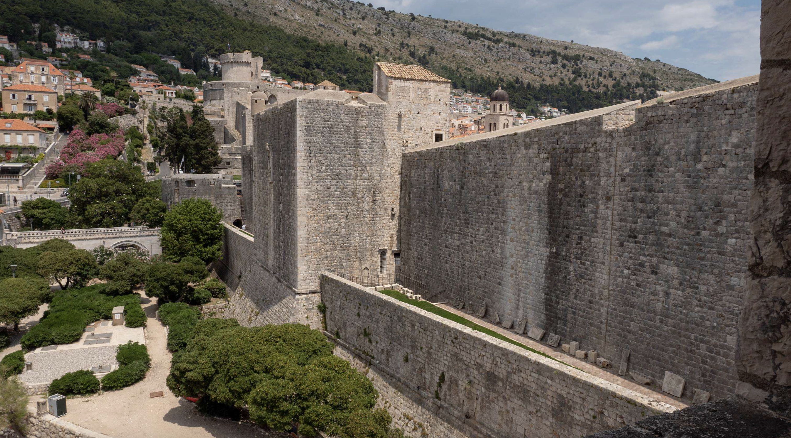

Western Outer Wall
Zapadno predziđe
Zapadni sklop zidina nastao je u 13. stoljeću, kad se grad širi prema sjeveru i obzidava.
Bio je to jednostavan, okomiti zid s kruništem i zupcima, debeo metar i pol. S unutarnje strane tekao je obilazni hodnik, oslonjen na svodiće i konzole. U tom je zidu sagrađeno pet četvrtastih kula.
Tvrđava Bokar, jedna od najstarijih kazamatnih tvrđava u Europi, zatvara pojas sa strane mora.